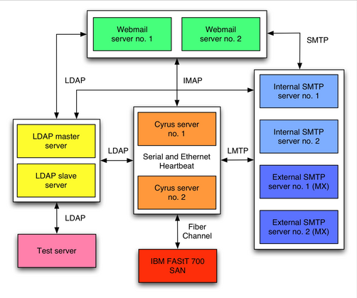

<!DOCTYPE HTML PUBLIC "-//W3C//DTD HTML 4.01 Transitional//EN"><html><head><title>HEC Montréal: Deployment of a Large-Scale Mail Installation</title>

<meta http-equiv="Content-Type" content="text/html; charset=ISO-8859-1">
<meta name="AUTHOR" content="Linux Journal  - The Premier Magazine of the Linux Community">
<meta name="COPYRIGHT" content="Copyright (c) 2002 by Linux Journal  - The Premier Magazine of the Linux Community">
<meta name="KEYWORDS" content="linux, linux journal, magazine">
<meta name="DESCRIPTION" content="The Monthly Magazine of the Linux Community">
<meta name="GOOGLEBOT" content="NOARCHIVE">
<meta name="GENERATOR" content="PHP-Nuke 5.0 - http://phpnuke.org">


<link rel="StyleSheet" href="linux-journal-20040501_files/style.css" type="text/css">


<script type="text/javascript">
<!--
function showimage() {
if (!document.images)
return
document.images.avatar.src=
'http://www.linuxjournal.com/images/forum/avatar/' + document.Register.user_avatar.options[document.Register.user_avatar.selectedIndex].value
}
//-->
</script>

<script type="text/javascript">
<!--
function openwindow(){
        window.open ("","Help","toolbar=no,location=no,directories=no,status=no,scrollbars=yes,resizable=no,copyhistory=no,width=600,height=400");
}
//-->
</script></head>

<body bgcolor="#505050" text="#000000" link="#363636" vlink="#363636" alink="#d5ae83">
<table><tbody><tr><td>
<script type="text/javascript">
<!--
   if (!document.phpAds_used) document.phpAds_used = ',';
   phpAds_random = new String (Math.random()); phpAds_random = phpAds_random.substring(2,11);
   document.write ("<center><" + "script language='JavaScript' type='text/javascript' src='");
   document.write ("http://www.ssc.com/adserver/adjs.php?n=" + phpAds_random);
   document.write ("&amp;what=zone:1");
   document.write ("&amp;exclude=" + document.phpAds_used);
   if (document.referer)
      document.write ("&amp;referer=" + escape(document.referer));
   document.write ("'></center><" + "/script>");
//-->
<center><a href="http://www.ssc.com/adserver/adclick.php?n=afcb8415"
target="_blank"></a> </center> <br>
<table cellpadding="0" cellspacing="0" width="100%" border="0" align="center" bgcolor="#ffffff">
<tbody><tr>
<td bgcolor="#ffffff">

<a href="http://www.linuxjournal.com/index.php"></a></td>
<td bgcolor="#999999"></td>
<td bgcolor="#cfcfbb" align="center">
<center><form action="search.php" method="post"><font class="content" color="#000000"><b>Search </b>
<input type="text" name="query" size="14"></font></form></center></td>
<td bgcolor="#cfcfbb" align="center">
<center><form action="search.php" method="get"><font class="content"><b>Topics </b>
<select name="topic" onchange="submit()"><option value="">All Topics</option><option value="11">Book Reviews</option><option value="6">Development Tools</option><option value="36">Embedded</option><option value="17">Games</option><option value="34">German</option><option value="30">Hardware</option><option value="12">Linux Community</option><option value="9">Linux in Business</option><option value="7">Linux in Education</option><option value="29">Linux Journal</option><option value="4">Linux Kernel</option><option value="21">Linux Market</option><option value="1">Miscellaneous</option><option value="13">Multimedia</option><option value="5">Networking</option><option value="31">Other Software</option><option value="32">Product of the Day</option><option value="19">Product Reviews</option><option value="8">Security</option><option value="33">Spanish</option><option value="35">Tutorial</option><option value="28">Web Development</option></select></font></form></center></td>
<td bgcolor="#cfcfbb" valign="top"></td>
</tr></tbody></table>
<table cellpadding="0" cellspacing="0" width="100%" border="0" align="center" bgcolor="#fefefe">
<tbody><tr>
<td bgcolor="#000000" colspan="4"></td>
</tr>
<tr valign="middle" bgcolor="#dedebb">
<td width="15%" nowrap=""><font class="content" color="#363636"><b>
<!-- BEGIN user customization -->  <b><font color="#363636"><a href="http://www.linuxjournal.com/user.php">Create</a></font> an account</b>
<!-- END user customization --></b></font></td>
<td align="center" height="20" width="70%"><font class="content"><b>
<a href="http://www.linuxjournal.com/">Home</a>
 · 
<a href="http://www.linuxjournal.com/subscribe.php">Subscribe</a>
 · 
<a href="http://www.linuxjournal.com/topics.php">Topics</a>
 · 
<a href="http://www.linuxjournal.com/advertising.php">Advertise</a>
 · 
<a href="http://pr.linuxjournal.com/" target="_blank">Vendor Press</a>
</b></font>

</td>
<td> </td>
</tr>
<tr>
<td bgcolor="#000000" colspan="4"></td>
</tr>
</tbody></table>
<!-- FIN DEL TITULO -->
<table width="100%" cellpadding="0" cellspacing="0" border="0" bgcolor="#ffffff" align="center"><tbody><tr valign="top">
<td bgcolor="#ffffff"></td></tr></tbody></table>
<table width="100%" cellpadding="0" cellspacing="0" border="0" bgcolor="#ffffff" align="center"><tbody><tr valign="top">
<td bgcolor="#ffffff"></td>
<td bgcolor="#ffffff" width="150" valign="top">
<table border="0" cellpadding="1" cellspacing="0" bgcolor="#000000" width="150"><tbody><tr><td>
<table border="0" cellpadding="3" cellspacing="0" bgcolor="#dedebb" width="100%"><tbody><tr><td align="left">
<font class="content" color="#363636"><b>Linux Journal</b></font>
</td></tr></tbody></table></td></tr></tbody></table>
<table border="0" cellpadding="0" cellspacing="0" bgcolor="#ffffff" width="150">
<tbody><tr valign="top"><td bgcolor="#ffffff">
<font class="content"><strong><big>·</big></strong>
  <a href="http://www.linuxjournal.com/index.php">Home</a><br>
 
<strong><big>·</big></strong>
  <a href="http://www.linuxjournal.com/modules.php?op=modload&amp;name=NS-subscribe&amp;file=suboptions#new">
     Subscribe</a> / 
  <a href="http://www.linuxjournal.com/modules.php?op=modload&amp;name=NS-subscribe&amp;file=suboptions#renew">
     Renew</a><br>
<strong><big>·</big></strong>
  <a href="http://www.linuxjournal.com/modules.php?op=modload&amp;name=NS-subscribe&amp;file=suboptions#address">
     Change Address</a><br>
<strong><big>·</big></strong>
   <a href="http://www.linuxjournal.com/subscribe.php">Subscriber Services</a><br></font><p>
<font class="content"><strong><big>·</big></strong>
   <a href="http://www.linuxjournal.com/PdfSubQues.php">Download a Sample</a><br>
   <a href="http://www.linuxjournal.com/PdfSubQues.php">Issue</a>
</font></p><p>
<font class="content"><strong><big>·</big></strong>
   <a href="http://www.linuxjournal.com/advertising.php">Advertise</a><br> 
<strong><big>·</big></strong>
   <a href="http://www.linuxjournal.com/modules.php?op=modload&amp;name=NS-author&amp;file=wanted">
      Write for Us</a><br>
<strong><big>·</big></strong>
   <a href="http://www.linuxjournal.com/press.php">Press Releases</a><br> 
<strong><big>·</big></strong>
   <a href="http://www.linuxjournal.com/contact.php">Contact Us</a><br>
</font></p><p>
<font class="content"><strong><big>·</big></strong>
   <a href="http://www.geekcruises.com/home/ll4_home.html">
       Linux Lunacy Cruise</a><br>
<strong><big>·</big></strong>
   <a href="http://www.linuxjournal.com/ljpress">LJ Press Books</a><br>
<strong><big>·</big></strong>
   <a href="http://www.linuxjournal.com/modules.php?op=modload&amp;name=NS-FAQ&amp;file=index">
       FAQ</a><br></font>
</p></td></tr></tbody></table>
<br>


<table border="0" cellpadding="1" cellspacing="0" bgcolor="#000000" width="150"><tbody><tr><td>
<table border="0" cellpadding="3" cellspacing="0" bgcolor="#dedebb" width="100%"><tbody><tr><td align="left">
<font class="content" color="#363636"><b>Subscribe (USA)</b></font>
</td></tr></tbody></table></td></tr></tbody></table>
<table border="0" cellpadding="0" cellspacing="0" bgcolor="#ffffff" width="150">
<tbody><tr valign="top"><td bgcolor="#ffffff">
<form method="post" action="https://www.ssc.com/cgi-bin/lj/USA.py">

<table cellspacing="0" cellpadding="0">
<tbody><tr>
   <td align="right">
     <font face="arial, helvetica, sans-serif" size="-2">Name </font>
   </td>
   <td align="left">
      <font face="arial, helvetica, sans-serif" size="-2">
      <input type="text" size="10" name="name" maxlength="32">
      </font>
    </td>
 </tr>
 <tr>
    <td align="right">
      <font face="arial, helvetica, sans-serif" size="-2">Addr </font>
    </td> 
    <td align="left">
      <font face="arial, helvetica, sans-serif" size="-2">
      <input type="text" size="10" name="addr1" maxlength="32">
      </font>
    </td>
 </tr>
 <tr>
     <td align="right">
        <font face="arial, helvetica, sans-serif" size="-2">Addr </font>
     </td>
     <td align="left">
	<font face="arial, helvetica, sans-serif" size="-2">
	 <input type="text" size="10" name="addr2" maxlength="32">
         </font>
     </td>
 </tr>
 <tr>
    <td align="right">
       <font face="arial, helvetica, sans-serif" size="-2">City </font>
    </td>
    <td align="left">
        <font face="arial, helvetica, sans-serif" size="-2">
	<input type="text" size="10" name="city" maxlength="17">
        </font>
     </td> 
 </tr>
 <tr>
     <td align="right">
        <font face="arial, helvetica, sans-serif" size="-2">State </font>
      </td>
      <td align="left">
        <font face="arial, helvetica, sans-serif" size="-2">
        <input type="text" size="3" name="state" maxlength="2"> 
     </font></td>
</tr><tr>
</tr>
     <tr><td align="right">
        <font face="arial, helvetica, sans-serif" size="-2">Zip </font>
     </td>
     <td align="left">
	<font face="arial, helvetica, sans-serif" size="-2">
        <input type="text" size="6" name="zip" maxlength="10">
        </font>
      </td>
 </tr>
 <tr>
      <td align="right">
        <font face="arial, helvetica, sans-serif" size="-2">Email </font>
      </td> 
      <td align="left">
        <font face="arial, helvetica, sans-serif" size="-2">
	<input type="text" size="10" name="email" maxlength="60">
      </font></td>
 </tr> 
</tbody></table>
<table>
<tbody><tr>
    <td valign="middle" width="80%" nowrap="1">
      <font face="arial, helvetica, sans-serif" size="-2">
          </font><div><font face="arial, helvetica, sans-serif" size="-2"><input type="radio" name="term" value="1yr" checked="checked">
                12 issues for $25
          </font></div>
<font face="arial, helvetica, sans-serif" size="-2">          </font><div><font face="arial, helvetica, sans-serif" size="-2"><input type="radio" name="term" value="2yr">
                24 issues for $45
          </font></div>
<font face="arial, helvetica, sans-serif" size="-2">       </font></td>
</tr>
<tr>
     <td align="center">
        <input type="submit" value="Subscribe">
        <p align="center">
        <font face="arial, helvetica, sans-serif" size="-2">
        Click below for:<br>
        <a href="https://www.ssc.com/lj/subs/NewCanada.html">Canada</a> *
        <a href="https://www.ssc.com/lj/subs/NewMexico.html">Mexico</a> *
        <a href="https://www.ssc.com/lj/subs/NewOther.html">Other</a>
        </font>
     </p></td>
</tr>
</tbody></table>
</form>
</td></tr></tbody></table>
<br>


<table border="0" cellpadding="1" cellspacing="0" bgcolor="#000000" width="150"><tbody><tr><td>
<table border="0" cellpadding="3" cellspacing="0" bgcolor="#dedebb" width="100%"><tbody><tr><td align="left">
<font class="content" color="#363636"><b>Store</b></font>
</td></tr></tbody></table></td></tr></tbody></table>
<table border="0" cellpadding="0" cellspacing="0" bgcolor="#ffffff" width="150">
<tbody><tr valign="top"><td bgcolor="#ffffff">
<strong><big>·</big></strong> <a href="http://store.linuxjournal.com/Merchant2/merchant.mv?Screen=CTGY&amp;Store_Code=LJS&amp;Category_Code=LA" target="_blank">Order Back Issues</a><br>


<strong><big>·</big></strong> <a href="http://store.linuxjournal.com/Merchant2/merchant.mv?Screen=CTGY&amp;Store_Code=LJS&amp;Category_Code=T" target="_blank">T-shirts</a><br> 


<strong><big>·</big></strong> <a href="http://store.linuxjournal.com/Merchant2/merchant.mv?Screen=CTGY&amp;Store_Code=LJS&amp;Category_Code=H" target="_blank">Hats</a><br> 

 

<strong><big>·</big></strong> <a href="http://store.linuxjournal.com/Merchant2/merchant.mv?Screen=CTGY&amp;Store_Code=LJS&amp;Category_Code=B" target="_blank">Books</a><br> 


<strong><big>·</big></strong> <a href="http://store.linuxjournal.com/" target="_blank">Fun Stuff</a><br>


<strong><big>·</big></strong> <a href="http://store.linuxjournal.com/Merchant2/merchant.mv?Screen=CTGY&amp;Store_Code=LJS&amp;Category_Code=RC" target="_blank">Reference Cards</a><br>
</td></tr></tbody></table>
<br>


<table border="0" cellpadding="1" cellspacing="0" bgcolor="#000000" width="150"><tbody><tr><td>
<table border="0" cellpadding="3" cellspacing="0" bgcolor="#dedebb" width="100%"><tbody><tr><td align="left">
<font class="content" color="#363636"><b>Other SSC Sites</b></font>
</td></tr></tbody></table></td></tr></tbody></table>
<table border="0" cellpadding="0" cellspacing="0" bgcolor="#ffffff" width="150">
<tbody><tr valign="top"><td bgcolor="#ffffff">
<strong><big>·</big></strong> <a href="http://www.linuxgazette.com/" target="_blank">Linux Gazette</a><br>

<strong><big>·</big></strong> <a href="http://pr.linuxjournal.com/" target="_blank">pr.linuxjournal.com</a><br>

<strong><big>·</big></strong> <a href="http://www.a42.com/" target="_blank">A42.com</a><br>

<strong><big>·</big></strong> <a href="http://www.ssc.com/" target="_blank">SSC Publications</a><br>
</td></tr></tbody></table>
<br>


<table border="0" cellpadding="1" cellspacing="0" bgcolor="#000000" width="150"><tbody><tr><td>
<table border="0" cellpadding="3" cellspacing="0" bgcolor="#dedebb" width="100%"><tbody><tr><td align="left">
<font class="content" color="#363636"><b>Linux Resources</b></font>
</td></tr></tbody></table></td></tr></tbody></table>
<table border="0" cellpadding="0" cellspacing="0" bgcolor="#ffffff" width="150">
<tbody><tr valign="top"><td bgcolor="#ffffff">
<strong><big>·</big></strong> <a href="http://www.linuxjournal.com/magazine.php">Magazine Archive</a><br>
<strong><big>·</big></strong> <a href="http://www.linuxjournal.com/webindex.php">Web Article Index</a><br>
<strong><big>·</big></strong> <a href="ftp://ftp.ssc.com/pub/lj/listings" target="_blank">Downloads</a><br>
<strong><big>·</big></strong> <a href="http://www.linuxjournal.com/resources.php">Linux Resources</a><br>
<strong><big>·</big></strong> <a href="http://www.linuxjournal.com/helpdesk.php">Help Desk</a><br>
<strong><big>·</big></strong> <a href="http://www.linuxjournal.com/links.php">Web Links</a><br>
<strong><big>·</big></strong> <a href="http://www.ssc.com:8080/glue/" target="_blank">User Groups (GLUE)</a><br>
<strong><big>·</big></strong> <a href="http://www.linuxjournal.com/events.php">Special Events</a><br>
<strong><big>·</big></strong> <a href="http://www.linuxjournal.com/adindex.php">Advertiser Index</a><br>
</td></tr></tbody></table>
<br>


</td><td></td><td width="100%">
<!-- END HEADER -->
<table width="100%" border="0"><tbody><tr><td valign="top">
<table border="0" cellpadding="0" cellspacing="0" bgcolor="#ffffff" width="100%"><tbody><tr><td>
<table border="0" cellpadding="1" cellspacing="0" bgcolor="#000000" width="100%"><tbody><tr><td>
<table border="0" cellpadding="3" cellspacing="0" bgcolor="#cfcfbb" width="100%"><tbody><tr><td align="left">
<font class="option" color="#363636"><b><a href="http://www.linuxjournal.com/categories.php?op=newindex&amp;catid=221">Issue 121</a>: <font color="navy">HEC Montréal: Deployment of a Large-Scale Mail Installation</font></b></font><br>
<font class="content">Posted on Saturday, May 01, 2004 by <a href="mailto:ludovic@inverse.ca">Ludovic Marcotte</a></font></td><td align="right"><a href="http://www.linuxjournal.com/print.php?sid=7323"></a>  <a href="http://www.linuxjournal.com/friend.php?op=FriendSend&amp;sid=7323"></a>
</td></tr></tbody></table></td></tr></tbody></table><br><a href="http://www.linuxjournal.com/search.php?query=&amp;topic=5"></a>
<font class="content" color="#000000"><i>Forced to upgrade by a flood of junk mail, this university went to a heavy-duty system based on Linux.</i><br><br><div class="article" lang="en"><div class="simplesect" lang="en"><div class="titlepage"><div><h2 class="title"><a name="N0x85118d8.0x857a2bc"></a></h2></div></div><p>
Over the past few years, e-mail has grown into one of the most important
communication mediums. 
Naturally, e-mail infrastructures
must be fast, secure and reliable. Ideally, they also should be able to
integrate easily and effectively with anti-unsolicited bulk e-mail
(UBE) solutions.
</p><p>
HEC Montréal is Canada's first management school, founded in 1907.
More than 11,000 students and 220 professors use HEC's e-mail system
every year, and alumni keep their e-mail accounts after graduation.
Unfortunately, the proprietary e-mail system 
did not evolve and as the load started to increase, the infrastructure
could no longer keep up with requirements.
</p><p>
The previous mail infrastructure at HEC Montréal was based on four IBM
AIX servers running Netscape Messaging Server 4.15. Each of those
servers offered all services (IMAP, POP3, SMTP and Webmail
access) for a subset of users. 
The system simply did not scale to current mail requirements. According to Eddy Béliveau, Senior Network
Analyst at HEC Montréal:
</p><div class="blockquote"><blockquote class="blockquote"><p>
We found ourselves with mail server software that had not been
upgraded in the last two years because the AIX platform was no longer
supported by Sun/iPlanet/Netscape, which owned the mail server
software. We had a regular increase of our e-mail traffic during the
last 12 months due to the presence of UBE and viruses trying to
replicate themselves. We got peaks of over 100 concurrent SMTP
connections, which was too much for our servers; the typical load
average was over 50 on all servers. We could not, on our old 133MHz
servers, execute any anti-virus or anti-UBE applications, not even a
simple RBL filtering policy. Thus, we had to re-examine the hardware
and software architecture of our e-mail system but [could] not find time to
install alternatives. We were like a dog running after his tail trying
to stabilize the situation.
</p></blockquote></div><p>
HEC Montréal contacted us at Inverse, Inc., to help them
replace the mail infrastructure and deploy a better alternative.
</p><div class="mediaobject"><div class="caption"><p>
Figure 1. HEC Montréal is a tough e-mail problem: 35,500 users
and more than 600,000 spam messages a week.
</p></div></div></div><div class="simplesect" lang="en"><div class="titlepage"><div><h2 class="title"><a name="N0x85118d8.0x857a4f8"></a>
The Proposed Solution</h2></div></div><p>
The proposed solution was driven by the following factors:
</p><div class="itemizedlist"><ul type="disc"><li><p>
Cost: HEC Montréal could not afford a per-user license
fee for 35,500 users.
</p></li><li><p>
Ease of maintenance: the infrastructure had to be easy to
manage. Accounts creation and destruction should be automated,
updates should be easy to apply and the infrastructure should let
HEC Montréal leverage the expertise they have.
</p></li><li><p>
Security: the components of the solution should have a proven
security track record.
</p></li><li><p>
Robustness: the components should be mature and should have been
used in production environments for months. Furthermore, the
development should be active to accelerate bug fixes,
feature enhancements and security updates.
</p></li><li><p>
Scalability:
the solution must meet its purpose for many
months, because the number of users grows by 2,000&#8211;3,000 every
year. Its architecture also should allow adding extra servers to
distribute the load or offer more redundancy.
</p></li></ul></div><p> When we were first approached, HEC Montréal was leaning
toward a Linux-based solution running Novell NetMail 3.1. Having great experience 
with free alternatives, we decided to compare the solution we had in mind
with Novell's offerings. </p><p>
That said, we built two identical test environments using Red Hat
Linux 9 and installed NetMail 3.1 on one and our proposed solution on 
the other. Next, we performed a series of stress tests in order to measure
the stability and the performance of the two solutions. The tests were
performed with two benchmarking utilities, postal and tm. The results
showed that while NetMail was the fastest for POP3 operations, it
proved to be the slowest in the IMAP and SMTP tests. It also had a lot of
stability issues when overloading the server with IMAP requests.
</p><p>
Combined with our experience, we proposed a solution based
almost entirely on open-source components. We started with a
standard Red Hat Linux 9 distribution using Silicon
Graphics, Inc.'s XFS kernel packages. We included
Cyrus IMAP and Cyrus SASL, which included IMAP, LMTP and POP3 dæmons as well as
authentication libraries and redirection/vacation scripts support
using Sieve. Next,
Postfix, AMaViS, SpamAssassin, Vipul's Razor and NAI VirusScan were added
to build a complete
SMTP server solution with enhanced tools to limit the delivery of UBE
and viruses.
Apache, PHP4, IMAP Proxy and SquirrelMail provided a complete Webmail solution.
OpenLDAP was added to store all information regarding users'
accounts (e-mail address and aliases, SquirrelMail preferences and so
on),
as well as other specific attributes of HEC Montréal.
Finally, we installed Linux HA Heartbeat, software used to monitor the health of
some nodes on the network.
</p><p>
The new infrastructure is running on 11 IBM eServer xSeries x305
and x335 servers. The two x335s are connected to an IBM FAST
700 Storage Array Network (SAN) using Fibre Channel, where the
mailstore resides. The XFS filesystem is used for the mailstore in
order to maximize file access operations. Figure 2 depicts the
architecture.
</p><div class="mediaobject"><div class="caption"><p>
Figure 2. Architecture of the Proposed Infrastructure
</p></div></div><p>
Four STMP servers running Postfix are used: two of them are mail exchangers
(MXes) for the HEC Montréal domains and the other two serve internal
mailing needs. These servers also use AMaViS, SpamAssassin,
Vipul's Razor and Network Associates' VirusScan to limit the
delivery of UBE and viruses. Furthermore, two Cyrus IMAP
servers are connected using serial and Ethernet cables for
high availability. Only one Cyrus IMAP server is active at any moment;
it serves all POP3 and IMAP connections, stores mails on the SAN
(received using the LMTP protocol from the four Postfix servers) and
processes Sieve scripts.
</p><p>
Two Webmail
servers run Apache, PHP4, SquirrelMail and IMAP Proxy. The latter
is used to cache IMAP connections between SquirrelMail and the Cyrus
IMAP server in order to minimize the load (authentication and process
forks) on the mailstore. Finally, one other server is used only for
testing purposes. That is, any modifications to the infrastructure
must go through this server, which is configured to run every
component, before being applied to the environment in production.
</p><p>
With regard to the UBE filtering, we check mail at many levels
to ensure we block as many as we can.
Our checks include
carefully chosen real-time blackhole lists (RBLs);
header and MIME header checks using up-to-date maps from
SecuritySage, Inc.; and
content filtering initiated from AMaViS using SpamAssassin, Vipul's
Razor for UBEs analysis and VirusScan for viruses.
</p><p>
This solution has proven to be greatly effective and produces 
few false positives. The system also was built with load balancing and
failover in mind. The SMTP and the Webmail servers are used in a
round-robin fashion, efficiently distributing the load among all of them.
</p><p>
The main Cyrus server has an identical backup server in case of
failure. The latter is connected to the main Cyrus server and uses
Heartbeat to monitor the availability of the server. In case of a
failure (hardware problem, operating system crash and so on), the
secondary Cyrus server takes over all services. Heartbeat
automatically mounts the mailstore (located on the SAN), activates the
network alias and starts all Cyrus services. This offers a warm
switch-over that minimizes the outage time; sometimes it's not even
noticeable.
</p><p>
Finally, the LDAP system offers a master node together with a slave
that replicates the former using slurpd. All services are
configured to failover automatically to the slave in case of a failure
on the master node. Some services also are configured to use the
slave as the master node in order to distribute the LDAP load among
both servers; they failover to the master node.
</p></div><div class="simplesect" lang="en"><div class="titlepage"><div><h2 class="title"><a name="N0x85118d8.0x857a9f4"></a>
Migration</h2></div></div><p>
After putting the 11 servers for the new infrastructure in place,
one of the remaining challenges was to migrate all users from the old
infrastructure to the new one. About 35,500
users, 82,500 mailboxes 
and hundreds of thousands of messages (35GB of mail) had
to be migrated. Furthermore, redirection scripts and vacation messages
also had to be converted, and information such as preferences
from the previous Webmail system had to be kept intact.
In order to do this, we created a set of Perl scripts to take care of
the entire migration in a way that would appear 
seamless for the users:
</p><div class="itemizedlist"><ul type="disc"><li><p>
LDAP Init: populates the new LDAP server (based
on OpenLDAP) using the values from the previous LDAP server (based on
Netscape iPlanet). Included attributes are e-mail addresses and
aliases, special folders and signature preferences for Webmail.
</p></li><li><p>
Create Users: creates all user accounts 
about to be migrated.
</p></li><li><p>
Load Sieve: creates Sieve scripts and uploads
them to the mailstore by reading attributes from the previous LDAP
server. Sieve scripts are used for automatic redirections and vacation
messages.
</p></li><li><p>
Copy Mailboxes: copies all mailboxes for the
users being migrated. All message flags are kept intact. The IMAP
protocol is used a lot in this script. This script also
updates the mailHost attribute on both LDAP servers so the mails 
are routed to the correct destination mailboxes.
</p></li><li><p>
Update Mailboxes: run the morning after the migration to 
move the remaining (if any) messages in the users'
mailboxes. Mail could have been stuck in the queue of the SMTP
servers, before the users' mailHost attributes were changed.
</p></li></ul></div><p>
To minimize service interruptions for the users, we ran the
scripts in the order listed once classes
were finished at the end of the day. Few messages were
rejected during the import process; those that were simply
were retried by the source SMTP servers. In total, four nights were required
to migrate all the information. Running the scripts took from four to
seven hours, depending on the number of users located on each source
server and the execution speed, which was mainly limited by the
performance of the old AIX servers.
</p></div><div class="simplesect" lang="en"><div class="titlepage"><div><h2 class="title"><a name="N0x85118d8.0x857acb4"></a>
Key Statistics</h2></div></div><p>
After the migration, we extensively monitored all services in order to
discover any problems. As expected, we didn't have many. We
mainly tuned the minimum preforks of Cyrus processes as well as their
respective maximum children. We also tuned the SMTP servers for the
default process limits and preforks for AMaViS. We also used 
temporary LDAP queries during the migration, so we had to replace them
with optimized ones once the migration finished.
</p><p>
During a typical day, HEC Montréal receives over 125,000 e-mails, and
60% to 80% of the traffic is composed of UBEs. The internal SMTP
servers also manage thousands of messages sent by users, distribution
lists or other systems. About 300,000 POP3 connections (from 5,500
different users) and 60,000 IMAP connections (from 5,000 different
users) are initiated every day on the main Cyrus server. Peaks of 225
concurrent IMAP connections and 50 concurrent POP3 connections frequently are
encountered.
</p><p>
As mentioned earlier, the anti-UBE policies in place have proven to be
effective. During the first week after the migration, the two mail
exchangers blocked more than 600,000 unsolicited bulk e-mails. The week
after, spammers were less aggressive and the systems blocked over a
quarter of a million messages. The most effective policy is the RBL
checks, followed by the content filtering checks (using SpamAssassin and
Vipul's Razor) and, finally, the header and MIME header checks.
</p><p>
To extract those statistics, we installed Spamity, which parses mail
logs from the four Postfix servers and updates a PostgreSQL database
running on the test server. Thereafter, users or administrators can
examine the mail that was blocked by anti-UBE policies by using a
simple Web browser. Users also can perform searches for specific e-mail
addresses or domain names and filter the results by anti-UBE policies.
</p></div><div class="simplesect" lang="en"><div class="titlepage"><div><h2 class="title"><a name="N0x85118d8.0x857adbc"></a>
Conclusion</h2></div></div><p>
As you have seen in this article, migrating from a proprietary
solution to an open-source solution was a challenge. According to
Emmanuel Vigne, Information Systems Director at HEC
Montréal: 
</p><div class="blockquote"><blockquote class="blockquote"><p>
The key business benefits are huge, as we nearly eliminated UBE and greatly
enhanced the architecture of our mail infrastructure. We moved from an
architecture where all services were offered by four servers to an
architecture where the services are offered by many servers. That
allows us to minimize any potential outage and scale as the number of
users grow. In case of a failure, only one specific service is
affected, contrary to the situation before where thousands of users
could no longer use the e-mail service in case of a single server
failure.
</p></blockquote></div><p>
Putting this new infrastructure in place allowed us to
contribute to the Open Source community by developing a set of
patches to correct bugs and/or add features to most components we
installed.
</p><p>
As with any other system, this one will evolve 
over time. Interesting anti-UBE technologies are emerging,
such as Sender Policy Framework (SPF) [see page 50] and
Spamhaus Exploits Block List (XBL), and a new stable
version of Cyrus is available with NNTP and mailbox
annotations support. In addition, Postfix 2.1 is coming along
nicely and should offer excellent connection/rate
control with its new anvil server.
</p><p>
Finally, as this article was being written, a mirroring solution was
being deployed for the SAN. This should offer storage redundancy and
eliminate the single potential point of failure in the current infrastructure.
</p><p><span class="bold"><b>Resources for this article:</b></span> <a href="http://www.linuxjournal.com/article/7456" target="_blank">www.linuxjournal.com/article/7456</a>.
</p></div></div>
<p>
Ludovic Marcotte (<a href="mailto:ludovic@inverse.ca">ludovic@inverse.ca</a>) holds a Bachelor's degree in
Computer Science from the University of Montréal. He currently is a
software architect for Inverse, Inc., an IT consulting company located
in downtown Montréal.

</p><br><br><center><a href="https://www.ssc.com/lj/subs/NewUSA.html"></a></center></font>
</td></tr></tbody></table><br>


</td></tr></tbody></table>


<!-- COMMENTS NAVIGATION BAR START -->


<a name="comments"></a>
<table width="99%" border="0" cellspacing="0" cellpadding="0">
<tbody><tr><td bgcolor="#cfcfbb" align="center"><font class="content" color="#000000">"HEC Montréal: Deployment of a Large-Scale Mail Installation" | <a href="http://www.linuxjournal.com/user.php"><font color="#000000">Login/Create an Account</font></a> | <b>0</b> comments</font></td></tr>
<tr><td bgcolor="#efefef" align="center" width="100%">
<table border="0"><tbody><tr><td><font class="content">
<form method="get" action="article.php">
<font color="#000000">Threshold</font> <select name="thold"><option value="-1">-1</option><option value="0" selected="">0</option><option value="1">1</option><option value="2">2</option><option value="3">3</option><option value="4">4</option><option value="5">5</option></select> <select name="mode"><option value="nocomments">No Comments</option><option value="nested">Nested</option><option value="flat">Flat</option><option value="thread" selected="">Thread</option></select> <select name="order"><option value="0" selected="">Oldest First</option><option value="1">Newest First</option><option value="2">Highest Scores First</option></select>
<input type="hidden" name="sid" value="7323">
<input type="submit" value="Refresh"></form>
</font></td><td bgcolor="#efefef"><font class="content"><form action="comments.php" method="post"><input type="hidden" name="pid" value=""><input type="hidden" name="sid" value="7323"><input type="hidden" name="op" value="Reply">  <input type="submit" value="Post Comment"></form></font></td></tr></tbody></table>
</td></tr><tr><td bgcolor="#cfcfbb" align="center"><font class="tiny">The comments are owned by the poster. We aren't responsible for their content.</font></td></tr>
</tbody></table>

<!-- COMMENTS NAVIGATION BAR END -->

<!-- Finished article caching (or not caching). --></td><td bgcolor="#ffffff">
</td></tr></tbody></table>
<table width="100%" cellpadding="0" cellspacing="0" border="0" bgcolor="#ffffff" align="center"><tbody><tr valign="top">
<td align="center" height="17">


</td></tr></tbody></table>
<br><table width="100%" cellpadding="0" cellspacing="0" border="0" bgcolor="#ffffff" align="center"><tbody><tr valign="top">
<td></td>
<td width="100%"> </td>
<td></td>
</tr><tr align="center">
<td width="100%" colspan="3">
<!-- BEGIN FOOTER -->
    <center><font class="tiny">

    <a href="http://www.ssc.com/" target="blank"></a> <br>

    © 1994-2004 Specialized Systems Consultants, Inc. (SSC) publishers of <i>Linux Journal</i>. <br>

    </font><center><font class="tiny"> <a href="http://www.ssc.com/ssc/privacy.html">Privacy Statement</a> <br>

    Syndicated news file: <a href="http://www.linuxjournal.com/news.rss">news.rss</a><br>Powered by <a href="http://phpnuke.org/" target="_blank">PHP-Nuke</a> <br>

    </font>
    </center></center></td>
</tr><tr>
<td></td>
<td width="100%"> </td>
<td></td>
</tr></tbody></table>
</center></td></tr></tbody></table>

    </body></html>
